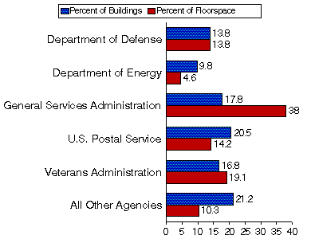

Overview
Percent of FBSS Buildings and Floorspace by Selected Agencies, FY
1993

Sources: Energy Information Administration,
Energy Markets and End Use, 1993 Federal Buildings Supplemental Survey.

Highlights on Federal Buildings
The Federal Buildings Supplemental Survey 1993 provides building-level energy-related
characteristics for a special sample of commercial buildings owned by the Government.
Extensive analysis of the data was not conducted because this report represents the 881
responding buildings (buildings for which interviews were completed) and cannot be used to
generalize about Federal buildings in each region. Crosstabulations of the data from the 881
buildings are provided in the Detailed Tables section.
- Energy Consumption: In FY 1993, the 881 responding
Federal commercial buildings in Federal Regions 3, 6, and 9 consumed about 22 trillion Btu of
electricity, natural gas, fuel oil, and district heat (Table 2.1).
- Energy Expenditures: Expenditures for the 22 trillion Btu
of energy consumed in the sampled Federal commercial buildings totaled about $308 million
dollars (Table 2.1).
- Energy Intensity: The major fuel energy consumption
intensity was 125.79 (thousand Btu per square foot) for the 881 buildings (Table 2.1).
- Principal Building Activity: Principal building activity, the
activity that occupies the most floorspace in the building, indicates the diversity of the Federal
commercial building population. In the 881 responding buildings in Federal Regions 3, 6, and 9,
office buildings accounted for the greatest number of buildings, 33 percent and about 48 percent
of the floorspace. Although health care buildings were only about 14 percent of the buildings in
the sample, they constituted 21 percent of the floorspace (Table 3.7).
- Selected Characteristics by Agency: In a commercial
building, building size and number of workers impact the consumption, expenditures and the
associated energy intensities. Table 2.1 provides these data on an agency level. In FY 1993, of
the total Federal expenditures for major fuel consumption in the 881 responding buildings in
Federal Regions 3, 6, and 9 ($308 million), the General Services Administration (GSA) spent
about $122 million. Overall, the GSA consumed about 33 percent of the total energy consumed
in the sampled buildings in Federal Regions 3, 6, and 9 in FY 1993. The Veterans
Administration was the next largest consumer of energy among the participating FBSS agencies.
View and/or Print Full Report


File Last Modified: April 9, 1997
- Contact:
- Joelle Michaels
- joelle.michaels@eia.doe.gov
- CBECS Manager
-
URL: http://www.eia.gov/consumption/commercial/data/archive/cbecs/cbecs2s.html
If you are having any technical problems with this site, please contact the EIA Webmaster at
wmaster@eia.doe.gov
|